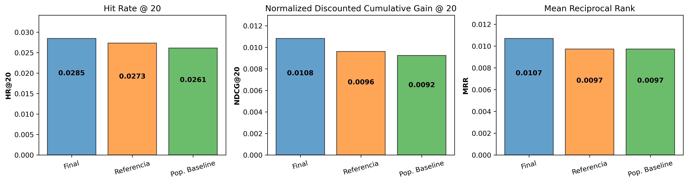

Recomendar una película no es solo encontrar el ítem más parecido a lo que a alguien le gustó antes: es decidir qué mostrarle a continuación, sabiendo que esa elección va a influir en lo que vea y califique después. Este proyecto explora esa idea aplicando Decision Transformers (DT) —una arquitectura que aprende a partir de secuencias de decisiones pasadas, en vez de reglas de similitud— a la recomendación de películas sobre el dataset Netflix Prize. El modelo refactorizado, con una arquitectura corregida y más expresiva, supera tanto al código de referencia como a un baseline simple de popularidad en todas las métricas de ranking evaluadas (HR@5, NDCG, MRR).
La mayoría de los sistemas de recomendación —filtrado colaborativo, factorización de matrices— responden a la pregunta '¿qué se parece a lo que le gustó?'. Este proyecto encara una pregunta distinta: '¿qué conviene recomendar ahora, dado todo lo que pasó antes?'. Para eso, cada sesión de usuario se modela como una trayectoria —la secuencia ordenada de películas vistas, calificadas y recomendadas— dentro de un Proceso de Decisión de Markov (MDP), el marco matemático estándar para representar decisiones secuenciales, donde cada paso depende del estado actual.
Los Decision Transformers, originalmente pensados para NLP, funcionan bien en este contexto porque convierten el problema de RL en uno de modelado de secuencias: en vez de explorar un entorno en vivo y ajustar una política por prueba y error (RL tradicional), el DT aprende directamente de trayectorias históricas ya registradas —de ahí el nombre aprendizaje por refuerzo offline— imitando los patrones de comportamiento que estuvieron asociados a buenos resultados. Aplicado a recomendación, esto significa tratar el historial de calificaciones de cada usuario como una serie temporal y dejar que la atención del Transformer aprenda qué combinaciones de películas anteriores anticipan una buena recomendación siguiente, sin simular usuarios ni interactuar con un entorno real.
Metodología
Formulación del Problema
Traducido a los términos del MDP, cada elemento de una recomendación queda así:
- Estado: película actual que el usuario está evaluando
- Acción: siguiente película recomendada
- Recompensa: calificación otorgada por el usuario (1-5 estrellas)
- Return-to-Go (RTG): suma de recompensas futuras esperadas a partir de ese punto de la trayectoria
El RTG es lo que distingue al DT de un RL tradicional. En vez de maximizar recompensa mediante optimización explícita, el modelo aprende a generar la secuencia de acciones que cabría esperar dado un retorno objetivo — algo parecido a decirle 'actuá como si esta trayectoria fuera a terminar con un puntaje X' y dejar que complete el resto en consecuencia. Esta capacidad de condicionar las predicciones en el retorno deseado es la característica distintiva de los Decision Transformers.
Preprocesamiento de Datos
Partimos del dataset Netflix Prize, preprocesado para obtener:
- 752 películas únicas (ítems más frecuentes)
- 8 grupos de usuarios obtenidos por clustering, para capturar perfiles de preferencia
- Trayectorias de interacción con secuencias de hasta 200 timesteps
Arquitectura del Modelo
Implementamos un Decision Transformer con PyTorch, con un encoder Transformer estándar adaptado para recibir intercaladas las tres señales del MDP (RTG, estado, acción) en cada timestep. Los componentes clave:
- Embeddings separados para estados, acciones y RTG, en vez de uno compartido
- Token type embeddings para que el modelo distinga a qué tipo de señal corresponde cada token
- Embeddings de timestep para codificar la posición temporal dentro de la trayectoria
- Embeddings de grupo de usuario para aportar algo de personalización
- Máscara causal que impide atender a información futura y, dentro de cada timestep, obliga a respetar el orden RTG → Estado → Acción
Hiperparámetros finales: hidden_dim=512, n_layers=2, n_heads=4, context_length=20, dropout=0.05, learning_rate=0.0001.
Problemas y Soluciones
Tres problemas concretos en la implementación de referencia explican buena parte de la mejora obtenida:
Embeddings compartidos causaban confusión: en la implementación original, estados y acciones compartían el mismo embedding, así que el modelo no tenía forma directa de distinguir 'la película que se está evaluando' de 'la película que se está recomendando'. Lo resolvimos con embeddings separados más token type embeddings explícitos.
Máscara causal incorrecta: la máscara de atención original no respetaba correctamente el orden causal dentro de cada timestep, permitiendo al modelo 'espiar' información que en producción no estaría disponible todavía. Diseñamos una máscara causal personalizada que permite atender a timesteps anteriores completos y, dentro del timestep actual, respeta estrictamente el orden RTG → Estado → Acción.
Sensibilidad al return conditioning: el rendimiento del modelo variaba mucho según qué valor de RTG se usara al pedir una recomendación (¿qué tan 'ambicioso' hay que ser al pedirle al modelo una buena trayectoria?). Resolvimos esto con experimentos sistemáticos sobre distintos percentiles de RTG del conjunto de entrenamiento, para elegir el valor de condicionamiento más estable en inferencia.
Resultados
Comparación de Modelos
Evaluamos con métricas estándar de ranking, más informativas que un accuracy simple para este tipo de sistema: HR@K (Hit Rate: si la película correcta aparece entre las K primeras recomendadas), NDCG (premia además que aparezca lo más arriba posible del ranking) y MRR (posición promedio del primer acierto, invertida).
| Modelo | HR@5 | NDCG@5 | HR@10 | NDCG@10 | MRR |
|---|---|---|---|---|---|
| DT Refactorizado | 0.86% | 0.54% | 1.51% | 0.75% | 1.07% |
| DT Referencia | 0.68% | 0.40% | 1.37% | 0.62% | 0.97% |
| Baseline Popularidad | 0.69% | 0.41% | 1.24% | 0.59% | 0.97% |
El modelo refactorizado supera tanto al código de referencia como al baseline de popularidad en todas las métricas.
Comparación de Loss

Curvas de entrenamiento y validación para modelo refactorizado vs referencia.
Comparación de Métricas

Métricas de evaluación (HR, NDCG, MRR) para los tres modelos comparados.
Análisis de Validación
Un detalle interesante de los resultados: el modelo refactorizado entrena de manera efectiva —su loss de entrenamiento baja de forma consistente— pero eso no se refleja igual en la loss de validación. A primera vista, esto sugiere cierto grado de sobreajuste, con el modelo memorizando patrones específicos de las trayectorias vistas en vez de generalizar. La implementación de referencia, en cambio, apenas reduce su loss y no mejora sus métricas bajo ningún conjunto de hiperparámetros, estrategia de warm-up o normalización de RTG probado, lo que apunta a limitaciones más de fondo en su arquitectura antes que a un problema de ajuste.
A pesar de ese sobreajuste aparente, las métricas de evaluación muestran que la versión modificada supera tanto al modelo de referencia como al baseline de popularidad. Las mejoras absolutas son pequeñas pero sistemáticas en las cinco métricas, lo que sugiere que las modificaciones introducidas —embeddings separados, estructura intercalada y una cabeza de predicción más simple— sí aumentan la capacidad del modelo para capturar dinámicas usuario-ítem que los métodos más simples no logran representar.
¿Por Qué Mejora a Pesar del Sobreajuste?
¿Cómo se explica que el modelo parezca sobreajustado y aun así mejore en las métricas que importan? Una hipótesis razonable es que validación y test miden cosas distintas: la validación usa una loss estricta de cross-entropy por timestep (acertar exactamente el siguiente token), mientras que el test usa métricas de ranking (HR@K, NDCG, MRR), mucho más alineadas con la tarea real de recomendación, donde alcanza con que la película correcta esté entre las primeras opciones, no en la posición exacta.
Hallazgos Principales
- Los embeddings separados mejoran el rendimiento: distinguir explícitamente estado y acción le permite al modelo aprender representaciones más precisas de cada uno.
- La máscara causal correcta es crucial: respetar el orden de la información dentro de cada timestep mejora la capacidad predictiva del modelo.
- El return conditioning funciona: pedirle al modelo RTGs altos durante la inferencia produce mejores recomendaciones, confirmando la idea central de los DT.
- Los grupos de usuario aportan información: el embedding de grupo permite cierto grado de personalización sin necesitar históricos extensos por usuario.
Conclusiones
Este proyecto muestra que los Decision Transformers sí pueden aplicarse al dominio de recomendación, aunque con mejoras modestas frente a los baselines. La contribución principal no fue la idea en sí —ya explorada en la literatura de offline RL— sino la refactorización y corrección arquitectónica del modelo, que resultó suficiente para superar de forma consistente tanto a la implementación de referencia como a un baseline simple.
La experiencia deja una lección más general: entender en profundidad la arquitectura Transformer —y adaptar correctamente cada componente (embeddings, máscaras, cabeza de predicción) al dominio específico— importa tanto como la idea de alto nivel. Los DT no reemplazan a los métodos especializados de recomendación, pero ofrecen un framework unificado interesante que conecta aprendizaje por refuerzo y modelado de secuencias, dos áreas que hoy convergen cada vez más en sistemas de IA generativa y de decisión.
Tecnologías
Agradecimientos
Este trabajo fue desarrollado para la materia Aprendizaje por Refuerzos en el marco de la Diplomatura en Ciencia de Datos (FAMAF, 2025). Realizado en conjunto con Felipe Ávila.